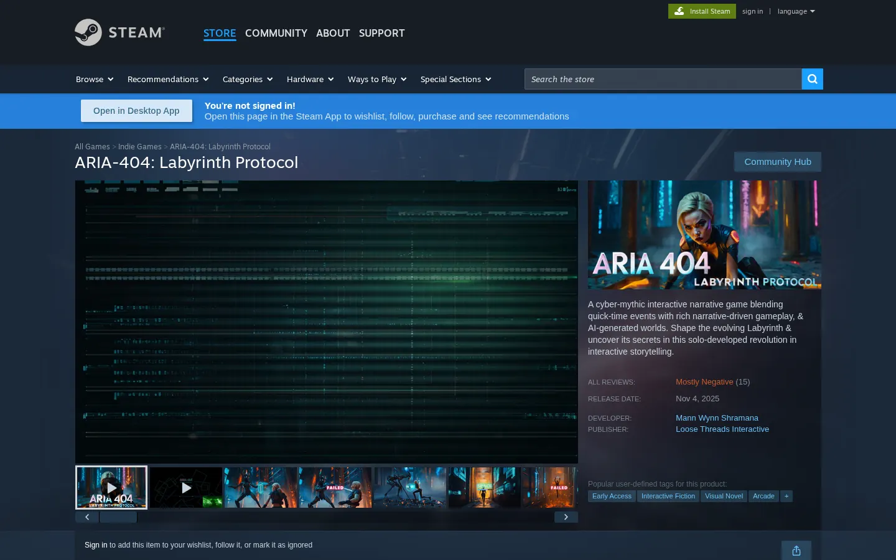
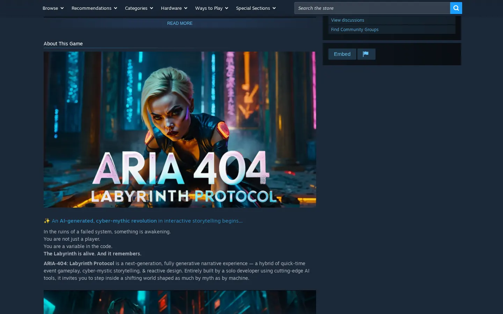

EnlargeARIA-404: The Labyrinth Protocol
A cinematic, QTE-driven narrative game about an AI waking up inside a digital prison, built with React and Electron and self-published on Steam.
React · Electron · Steamworks
Steam page Private repo